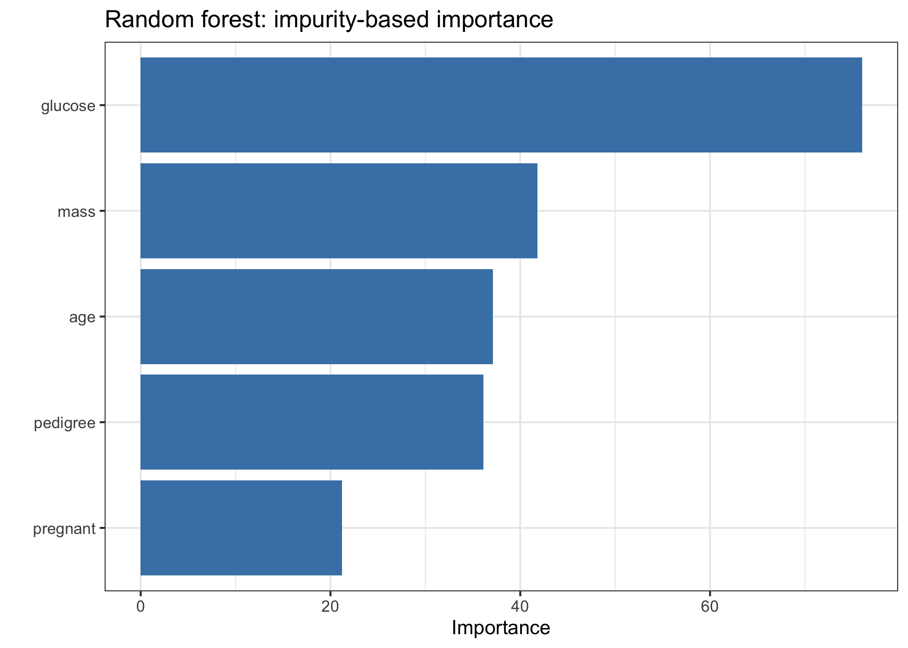
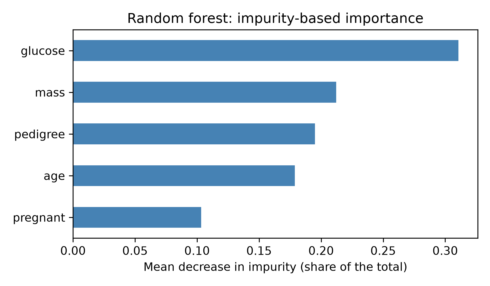
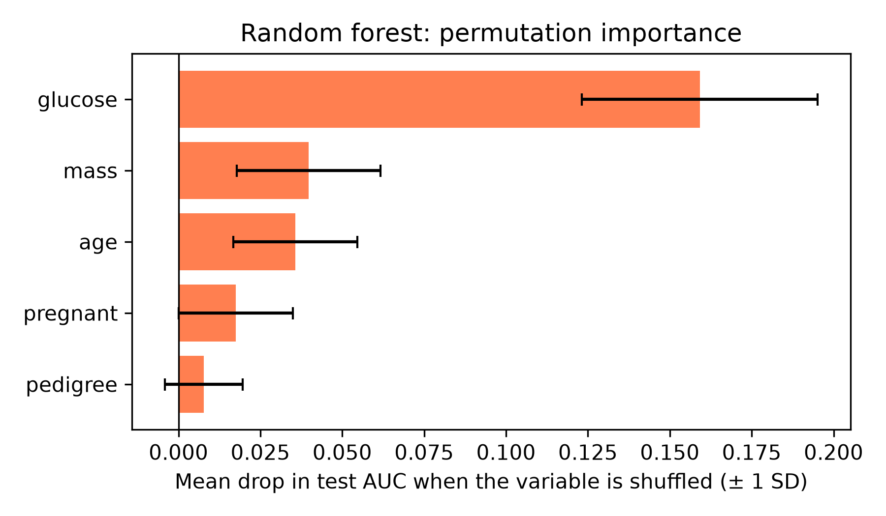

# Packages for this exercise. If one is missing, remove the # and run this line once:
# install.packages(c("tidyverse", "tidymodels", "ranger", "vip"))
library(tidyverse)
library(tidymodels)
library(vip) # variable importance for many kinds of model
theme_set(theme_bw()) # white background for every plot
options(pillar.sigfig = 3) # show three significant figures in tablesExercise 9.1 — Variable importance, and a column of pure noise
Day 5 ended with a random forest that predicts diabetes better than a single tree, but cannot be read the way a tree or a logistic regression can. The first question everyone asks of such a model is: which variables does it use? This exercise answers it in two different ways, which do not agree, and then tests both with a predictor we know to be useless.
Theory: impurity-based (Gini) importance; permutation importance; why a measure computed on the training rows can reward a useless variable; a column of pure noise as a control.
NoteThe plots are for looking at
The code for every plot is folded away just above it, in case you are curious, and all of it is in the notebook linked at the top of each tab. You are not expected to write it yourself.
Download this exercise as an R Markdown notebook (.Rmd): the text and every code cell of the R version, including the code for the plots, with the blanks left for you to fill in. Open it in Positron or RStudio and run it a chunk at a time.
Packages and data
Part 1 — The data and the forest
The same 750 people and the same split as Day 4, from data/diabetes_clean.csv: every fifth person is held back as the test set. This time we keep five predictors: number of pregnancies, glucose, BMI (mass), the diabetes pedigree function and age. Skin thickness (triceps), insulin and blood pressure are left out, because in this file a zero in those columns means “not measured”, and too many of them are zero to simply drop the rows.
diabetes <- read_csv("data/diabetes_clean.csv") |>
select(pregnant, glucose, mass, pedigree, age, diabetes) |>
mutate(diabetes = factor(diabetes, levels = c("neg", "pos")))
test_rows <- seq(1, nrow(diabetes), by = 5) # every fifth person is held back
train <- diabetes[-test_rows, ]
test <- diabetes[test_rows, ]
count(train, diabetes)#> # A tibble: 2 × 2
#> diabetes n
#> <fct> <int>
#> 1 neg 380
#> 2 pos 220600 training rows, 220 with diabetes; 150 test rows, 53 with diabetes.
Fit a random forest of 500 trees on the training rows, exactly as on Day 5. The argument importance = "impurity" asks the ranger engine to keep a record, while it grows the trees, of how much each variable helped; Part 2 reads it. A forest is random, so set the seed first.
set.seed(1)
rf_fit <- rand_forest(trees = 500) |>
set_engine("ranger", importance = "impurity") |>
set_mode("classification") |>
fit(diabetes ~ ., data = train)
test_preds <- predict(rf_fit, new_data = test, type = "prob") |>
bind_cols(test)
roc_auc(test_preds, truth = diabetes, .pred_pos, event_level = "second")#> # A tibble: 1 × 3
#> .metric .estimator .estimate
#> <chr> <chr> <dbl>
#> 1 roc_auc binary 0.826The test AUC is 0.826. Note event_level = "second": yardstick treats the first level of the outcome factor as the event, and our first level is neg, so without it you would be scoring how well the model finds the people without diabetes.
The two languages grow different random trees, so their forests, and every number on this page that comes from them, differ slightly. The Python tab gets an AUC of 0.824.
ImportantLearning points
- We explain one model all day: a random forest of 500 trees on five predictors, fitted on the same 600 training rows as Day 4.
- A forest is random: fix the seed, and expect a different forest (and slightly different numbers) in the other language.
Part 2 — Impurity-based importance
Every split in every tree makes the two groups it creates purer than the group it started from: the Gini impurity goes down. Impurity-based importance (also called Gini importance or mean decrease in impurity) is worked out like this:
- for each split in each tree, take the reduction in Gini impurity;
- weight it by the number of training rows that reach that split;
- add these up for each variable, over all the splits that used it;
- average over the trees.
A variable that the trees use often, near the top, to make large clean splits gets a high score. The forest computed all of this while it was being fitted, so it costs nothing to ask for.
The vip package reads it off almost any fitted model with vi(), and plots it with vip(). ranger reports the raw total; divide by the sum to get each variable’s share.
# Replace every ______ below, then run this cell.
impurity_importance <- vi(rf_fit) |>
mutate(share = Importance / ______)
impurity_importance
TipStuck?
vi() returns a table with the columns Variable and Importance. A share is one importance divided by the total of the whole column.
Code for this plot (optional)
vip(rf_fit, num_features = 5, aesthetics = list(fill = "steelblue")) +
labs(title = "Random forest: impurity-based importance")
Question! The impurity importance is computed from the splits the trees made on the training rows. What could that mean for a variable the forest happened to split on often, even though it does not really help to predict diabetes in new people?
Keep your answer: Part 4 tests it.
ImportantLearning points
- Impurity-based importance adds up how much each variable reduced the Gini impurity over all the splits in the forest.
- It is free, because the forest computes it while fitting, but it describes how the model used the training rows, not how well a variable predicts in new people.
- Different packages scale it differently: ranger gives a raw total, scikit-learn shares that add up to 1.
Part 3 — Permutation importance
Permutation importance asks a different question: if this variable carried no information, how much worse would the model be on new people? To find out, take the test set, shuffle one column so that its values land on the wrong patients, and score the model again. Nothing is refitted: the model stays the same, only its input has been damaged. The importance is the drop in AUC.
Do it once by hand for glucose:
auc_before <- roc_auc(test_preds, truth = diabetes, .pred_pos,
event_level = "second") |>
pull(.estimate)
set.seed(1)
test_shuffled <- test |>
mutate(glucose = sample(glucose)) # glucose now belongs to someone else
auc_after <- predict(rf_fit, new_data = test_shuffled, type = "prob") |>
bind_cols(test_shuffled) |>
roc_auc(truth = diabetes, .pred_pos, event_level = "second") |>
pull(.estimate)
c(before = auc_before, after = auc_after, drop = auc_before - auc_after)#> before after drop
#> 0.8264929 0.6720482 0.1544447With glucose shuffled the AUC falls from 0.826 to 0.672, a drop of 0.154. Your turn: do the same for BMI (mass).
# Replace every ______ below, then run this cell.
set.seed(1)
test_shuffled <- test |>
mutate(mass = sample(______))
auc_after <- predict(rf_fit, new_data = ______, type = "prob") |>
bind_cols(test_shuffled) |>
roc_auc(truth = diabetes, .pred_pos, event_level = "second") |>
pull(.estimate)
c(before = auc_before, after = auc_after, drop = auc_before - auc_after)Because one shuffle is one random draw, the proper version repeats it, 20 times for each variable, and reports the average drop. The loop below does exactly what you just did, for every predictor in turn. Read it line by line; it takes a few seconds.
set.seed(1)
perm_results <- data.frame() # one row per shuffle
for (variable in c("pregnant", "glucose", "mass", "pedigree", "age")) {
for (repeat_number in 1:20) {
test_shuffled <- test
test_shuffled[[variable]] <- sample(test_shuffled[[variable]])
auc_after <- predict(rf_fit, new_data = test_shuffled, type = "prob") |>
bind_cols(test_shuffled) |>
roc_auc(truth = diabetes, .pred_pos, event_level = "second") |>
pull(.estimate)
perm_results <- bind_rows(perm_results,
data.frame(variable = variable,
auc_drop = auc_before - auc_after))
}
}
perm_importance <- perm_results |>
group_by(variable) |>
summarise(importance = mean(auc_drop), sd = sd(auc_drop)) |>
arrange(desc(importance))
perm_importance#> # A tibble: 5 × 3
#> variable importance sd
#> <chr> <dbl> <dbl>
#> 1 glucose 0.155 0.0260
#> 2 mass 0.0365 0.0171
#> 3 age 0.0312 0.0204
#> 4 pregnant 0.0112 0.0152
#> 5 pedigree 0.00395 0.00971Code for this plot (optional)
perm_importance |>
ggplot(aes(x = importance, y = reorder(variable, importance))) +
geom_col(fill = "coral") +
geom_errorbar(aes(xmin = importance - sd, xmax = importance + sd),
width = 0.3, orientation = "y") +
geom_vline(xintercept = 0) +
labs(x = "Mean drop in test AUC when the variable is shuffled (± 1 SD)",
y = NULL, title = "Random forest: permutation importance")
Glucose dominates: shuffling it costs the model 0.155 of AUC on average. Everything else is small, and the error bars (one standard deviation over the 20 shuffles) are about as large as the differences between the variables. Pregnancies (0.011) and the pedigree function (0.004) are within one standard deviation of zero.
Question! Impurity importance gave BMI, age and the pedigree function between 17% and 20% of the total each, about half of glucose. Permutation importance gives them a small fraction of glucose. Why can the two disagree so much?
They measure different things. Impurity importance counts how much the trees used a variable on the training rows. Permutation importance measures how much the predictions on new people depend on it. A forest of deep trees uses every variable a great deal to separate the training rows, including in ways that do not carry over to new people. A permutation importance near zero, or below it, means the model would do as well without the information in that column.
ImportantLearning points
- Permutation importance is the drop in a test-set score (here the AUC) when one column is shuffled; the model is not refitted.
- It must be repeated, because each shuffle is random; report the mean and the spread.
- Impurity importance and permutation importance answer different questions, so their rankings can differ.
Part 4 — A control: a column of pure noise
How do we know which measure to believe? The way you would check any measurement: measure something whose true value you already know. Add a sixth predictor, noise, that is nothing but random numbers, drawn independently of everything else. Whatever an importance measure says about noise, the right answer is zero.
# Replace every ______ below, then run this cell.
set.seed(1)
train_noise <- train |> mutate(noise = rnorm(______)) # one random number per row
test_noise <- test |> mutate(noise = rnorm(______))
set.seed(1)
rf_noise <- rand_forest(trees = 500) |>
set_engine("ranger", importance = "impurity") |>
set_mode("classification") |>
fit(diabetes ~ ., data = train_noise)
vi(rf_noise) |>
mutate(share = Importance / sum(Importance))
TipStuck?
rnorm() needs to know how many numbers to draw: one per row. Inside mutate(), n() is the number of rows.
The column of random numbers gets 13% of the total impurity importance: more than the number of pregnancies, and almost as much as the pedigree function. By this measure, noise is a respectable predictor.
Now the permutation importance of the same forest, on the test rows with their own noise column. The loop is the one from Part 3, with noise added to the list:
auc_noise_before <- predict(rf_noise, new_data = test_noise, type = "prob") |>
bind_cols(test_noise) |>
roc_auc(truth = diabetes, .pred_pos, event_level = "second") |>
pull(.estimate)
set.seed(1)
perm_results_noise <- data.frame()
for (variable in c("pregnant", "glucose", "mass", "pedigree", "age", "noise")) {
for (repeat_number in 1:20) {
test_shuffled <- test_noise
test_shuffled[[variable]] <- sample(test_shuffled[[variable]])
auc_after <- predict(rf_noise, new_data = test_shuffled, type = "prob") |>
bind_cols(test_shuffled) |>
roc_auc(truth = diabetes, .pred_pos, event_level = "second") |>
pull(.estimate)
perm_results_noise <- bind_rows(perm_results_noise,
data.frame(variable = variable,
auc_drop = auc_noise_before - auc_after))
}
}
perm_results_noise |>
group_by(variable) |>
summarise(importance = mean(auc_drop), sd = sd(auc_drop)) |>
arrange(desc(importance))#> # A tibble: 6 × 3
#> variable importance sd
#> <chr> <dbl> <dbl>
#> 1 glucose 0.149 0.0247
#> 2 mass 0.0294 0.0186
#> 3 age 0.0262 0.0169
#> 4 pregnant 0.0201 0.0143
#> 5 pedigree 0.0100 0.00770
#> 6 noise -0.000496 0.00940Permutation importance puts noise at −0.0005, with a standard deviation of 0.009: zero, as it should be. Glucose (0.149), BMI (0.029) and age (0.026) stay clearly above it; pregnancies (0.020) and the pedigree function (0.010) beat it by little more than one standard deviation.
Question! Go back to your answer to the question in Part 2. A variable can get a sizeable impurity importance simply because it has many different values to split on, and deep trees will find some split on it that tidies up a few training rows. Random numbers have 600 different values. What does this tell you about reading a ranking of impurity importances on its own?
A ranking always has a first and a last place, even when most of the variables do nothing. A known-useless column gives you a floor: any variable that does not clearly beat noise should not be described as important.
ImportantLearning points
- A column of pure noise is a control: its true importance is zero, so it shows what each measure reports for nothing.
- Impurity importance gave the noise column a share comparable to real predictors; permutation importance on the test set put it at about zero.
- Report permutation importance, with its spread, when the question is which variables matter for prediction.
Download this exercise as a Jupyter notebook (.ipynb): the text and every code cell of the Python version, including the code for the plots, with the blanks left for you to fill in. Open it in Jupyter, VS Code or Positron and run it a cell at a time.
Packages and data
# Packages for this exercise. If one is missing, install it once from a terminal
# (in a Jupyter notebook, type %pip instead of pip):
# pip install pandas numpy matplotlib scikit-learn
import pandas as pd
import numpy as np
import matplotlib.pyplot as plt
from sklearn.ensemble import RandomForestClassifier
from sklearn.metrics import roc_auc_score
from sklearn.inspection import permutation_importancePart 1 — The data and the forest
The same 750 people and the same split as Day 4, from data/diabetes_clean.csv: every fifth person is held back as the test set. This time we keep five predictors: number of pregnancies, glucose, BMI (mass), the diabetes pedigree function and age. Skin thickness (triceps), insulin and blood pressure are left out, because in this file a zero in those columns means “not measured”, and too many of them are zero to simply drop the rows.
diabetes = pd.read_csv("data/diabetes_clean.csv")
diabetes = diabetes[["pregnant", "glucose", "mass", "pedigree", "age", "diabetes"]]
diabetes["diabetes"] = (diabetes["diabetes"] == "pos").astype(int) # 1 = pos, 0 = neg
is_test = diabetes.index % 5 == 0 # every fifth person is held back
train = diabetes[~is_test]
test = diabetes[is_test]
predictors = ["pregnant", "glucose", "mass", "pedigree", "age"]
train["diabetes"].value_counts()#> diabetes
#> 0 380
#> 1 220
#> Name: count, dtype: int64600 training rows, 220 with diabetes; 150 test rows, 53 with diabetes.
Fit a random forest of 500 trees on the training rows, exactly as on Day 5. scikit-learn keeps a record of how much each variable helped while it grows the trees; Part 2 reads it. A forest is random, so fix random_state.
rf = RandomForestClassifier(n_estimators=500, random_state=1)
rf = rf.fit(train[predictors], train["diabetes"])
test_prob = rf.predict_proba(test[predictors])[:, 1] # probability of diabetes
auc_before = roc_auc_score(test["diabetes"], test_prob)
round(auc_before, 3)#> 0.824The test AUC is 0.824.
The two languages grow different random trees, so their forests, and every number on this page that comes from them, differ slightly. The R tab gets an AUC of 0.826.
ImportantLearning points
- We explain one model all day: a random forest of 500 trees on five predictors, fitted on the same 600 training rows as Day 4.
- A forest is random: fix the seed, and expect a different forest (and slightly different numbers) in the other language.
Part 2 — Impurity-based importance
Every split in every tree makes the two groups it creates purer than the group it started from: the Gini impurity goes down. Impurity-based importance (also called Gini importance or mean decrease in impurity) is worked out like this:
- for each split in each tree, take the reduction in Gini impurity;
- weight it by the number of training rows that reach that split;
- add these up for each variable, over all the splits that used it;
- average over the trees.
A variable that the trees use often, near the top, to make large clean splits gets a high score. The forest computed all of this while it was being fitted, so it costs nothing to ask for.
scikit-learn stores it in feature_importances_, one number per predictor in the order of the columns. They are already scaled to add up to 1, so each one is that variable’s share.
# Replace every ______ below, then run this cell.
impurity_importance = pd.Series(rf.______, index=predictors)
impurity_importance = impurity_importance.sort_values(ascending=False)
print(impurity_importance.round(3))
print("sum:", impurity_importance.sum().round(3))
TipStuck?
Type rf. and look through the attributes that end in an underscore: they are the ones set by .fit().
Code for this plot (optional)
fig, ax = plt.subplots(figsize=(6, 3.5))
impurity_importance.sort_values().plot(kind="barh", ax=ax, color="steelblue")
ax.set_xlabel("Mean decrease in impurity (share of the total)")
ax.set_title("Random forest: impurity-based importance")
fig.tight_layout()
plt.show()
Question! The impurity importance is computed from the splits the trees made on the training rows. What could that mean for a variable the forest happened to split on often, even though it does not really help to predict diabetes in new people?
Keep your answer: Part 4 tests it.
ImportantLearning points
- Impurity-based importance adds up how much each variable reduced the Gini impurity over all the splits in the forest.
- It is free, because the forest computes it while fitting, but it describes how the model used the training rows, not how well a variable predicts in new people.
- Different packages scale it differently: ranger gives a raw total, scikit-learn shares that add up to 1.
Part 3 — Permutation importance
Permutation importance asks a different question: if this variable carried no information, how much worse would the model be on new people? To find out, take the test set, shuffle one column so that its values land on the wrong patients, and score the model again. Nothing is refitted: the model stays the same, only its input has been damaged. The importance is the drop in AUC.
Do it once by hand for glucose:
rng = np.random.default_rng(1)
test_shuffled = test.copy()
test_shuffled["glucose"] = rng.permutation(test_shuffled["glucose"].values) # glucose now belongs to someone else
auc_after = roc_auc_score(test_shuffled["diabetes"],
rf.predict_proba(test_shuffled[predictors])[:, 1])
print("before:", round(auc_before, 3))#> before: 0.824print("after: ", round(auc_after, 3))#> after: 0.608print("drop: ", round(auc_before - auc_after, 3))#> drop: 0.216With glucose shuffled the AUC falls from 0.824 to 0.608, a drop of 0.216. Your turn: do the same for BMI (mass).
# Replace every ______ below, then run this cell.
rng = np.random.default_rng(1)
test_shuffled = test.copy()
test_shuffled["mass"] = rng.permutation(test_shuffled[______].values)
auc_after = roc_auc_score(test_shuffled["diabetes"],
rf.predict_proba(______[predictors])[:, 1])
print("drop:", round(auc_before - auc_after, 3))Because one shuffle is one random draw, the proper version repeats it, 20 times for each variable, and reports the average drop. scikit-learn’s permutation_importance() does exactly what you just did, for every predictor in turn, with scoring="roc_auc".
perm = permutation_importance(rf, test[predictors], test["diabetes"],
scoring="roc_auc", n_repeats=20, random_state=1)
perm_importance = pd.DataFrame({"variable": predictors,
"importance": perm.importances_mean,
"sd": perm.importances_std})
perm_importance = perm_importance.sort_values("importance", ascending=False)
perm_importance.round(3)#> variable importance sd
#> 1 glucose 0.159 0.036
#> 2 mass 0.040 0.022
#> 4 age 0.036 0.019
#> 0 pregnant 0.018 0.017
#> 3 pedigree 0.008 0.012Code for this plot (optional)
ordered = perm_importance.sort_values("importance")
fig, ax = plt.subplots(figsize=(6, 3.5))
ax.barh(ordered["variable"], ordered["importance"], xerr=ordered["sd"],
color="coral", capsize=3)
ax.axvline(0, color="black", linewidth=0.8)
ax.set_xlabel("Mean drop in test AUC when the variable is shuffled (± 1 SD)")
ax.set_title("Random forest: permutation importance")
fig.tight_layout()
plt.show()
Glucose dominates: shuffling it costs the model 0.159 of AUC on average. Everything else is small, and the error bars (one standard deviation over the 20 shuffles) are about as large as the differences between the variables. The pedigree function (0.008) is within one standard deviation of zero, and pregnancies (0.018) only just above it.
Question! Impurity importance gave BMI, age and the pedigree function between 18% and 21% of the total each, 60% to 70% of glucose. Permutation importance gives them a small fraction of glucose. Why can the two disagree so much?
They measure different things. Impurity importance counts how much the trees used a variable on the training rows. Permutation importance measures how much the predictions on new people depend on it. A forest of deep trees uses every variable a great deal to separate the training rows, including in ways that do not carry over to new people. A permutation importance near zero, or below it, means the model would do as well without the information in that column.
ImportantLearning points
- Permutation importance is the drop in a test-set score (here the AUC) when one column is shuffled; the model is not refitted.
- It must be repeated, because each shuffle is random; report the mean and the spread.
- Impurity importance and permutation importance answer different questions, so their rankings can differ.
Part 4 — A control: a column of pure noise
How do we know which measure to believe? The way you would check any measurement: measure something whose true value you already know. Add a sixth predictor, noise, that is nothing but random numbers, drawn independently of everything else. Whatever an importance measure says about noise, the right answer is zero.
# Replace every ______ below, then run this cell.
rng = np.random.default_rng(1)
train_noise = train.copy()
test_noise = test.copy()
train_noise["noise"] = rng.normal(size=______) # one random number per row
test_noise["noise"] = rng.normal(size=______)
predictors_noise = predictors + ["noise"]
rf_noise = RandomForestClassifier(n_estimators=500, random_state=1)
rf_noise = rf_noise.fit(train_noise[predictors_noise], train_noise["diabetes"])
pd.Series(rf_noise.feature_importances_, index=predictors_noise).round(3)
TipStuck?
size= is how many numbers to draw: one per row, len(train_noise) for the training set and len(test_noise) for the test set.
The column of random numbers gets 15% of the total impurity importance: more than the number of pregnancies, and as much as the pedigree function and age. By this measure, noise is a respectable predictor.
Now the permutation importance of the same forest, on the test rows with their own noise column:
perm_noise = permutation_importance(rf_noise, test_noise[predictors_noise],
test_noise["diabetes"], scoring="roc_auc",
n_repeats=20, random_state=1)
perm_importance_noise = pd.DataFrame({"variable": predictors_noise,
"importance": perm_noise.importances_mean,
"sd": perm_noise.importances_std})
perm_importance_noise.sort_values("importance", ascending=False).round(3)#> variable importance sd
#> 1 glucose 0.152 0.034
#> 2 mass 0.031 0.016
#> 4 age 0.021 0.018
#> 0 pregnant 0.013 0.018
#> 3 pedigree -0.004 0.010
#> 5 noise -0.013 0.007Permutation importance puts noise at −0.013, with a standard deviation of 0.007: slightly below zero, meaning that shuffling it made the predictions, if anything, a little better. Glucose (0.152), BMI (0.031) and age (0.021) stay clearly above it; the pedigree function (−0.004) does no better than the noise.
Question! Go back to your answer to the question in Part 2. A variable can get a sizeable impurity importance simply because it has many different values to split on, and deep trees will find some split on it that tidies up a few training rows. Random numbers have 600 different values. What does this tell you about reading a ranking of impurity importances on its own?
A ranking always has a first and a last place, even when most of the variables do nothing. A known-useless column gives you a floor: any variable that does not clearly beat noise should not be described as important.
ImportantLearning points
- A column of pure noise is a control: its true importance is zero, so it shows what each measure reports for nothing.
- Impurity importance gave the noise column a share comparable to real predictors; permutation importance on the test set put it at about zero.
- Report permutation importance, with its spread, when the question is which variables matter for prediction.
Stretch
NoteStretch — the forest’s own permutation importance
ranger can compute a permutation importance itself while it fits, using the out-of-bag rows (the training rows each tree did not see). Refit the R forest with set_engine("ranger", importance = "permutation") and look at vi(). In Python there is no built-in equivalent, but you can run permutation_importance() on the training rows instead of the test rows. Does noise still come out at about zero? Why might permutation on the training rows be too generous to it?
NoteStretch — a noise column with only two values
Replace the normal noise with a random 0/1 column (R: sample(0:1, n(), replace = TRUE); Python: rng.integers(0, 2, size=...)). What happens to its impurity importance, and why?